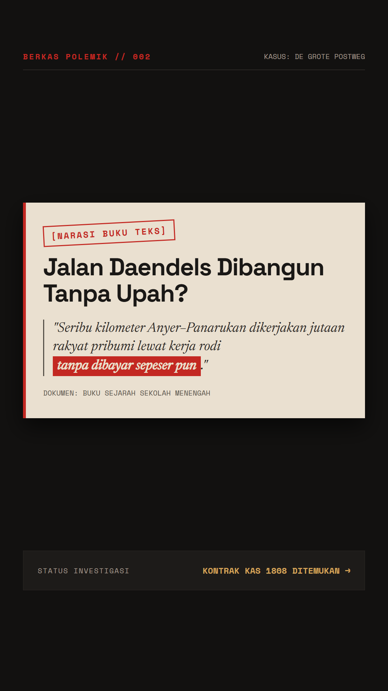

01: Hook / Anomali Berkas
0.0 to 8.0s
Membuka lembar berkas sekolah dan menandai anomali klaim kerja paksa tanpa upah.
Narasi adegan
Buku sejarah selalu mencatat: Jalan Raya Pos Anyer–Panarukan dibangun lewat kerja rodi tanpa upah sepeser pun.